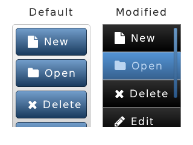

List (lv_list)¶
Overview¶
The Lists are built from a background Page and Buttons on it. The Buttons contain an optional icon-like Image (which can be a symbol too) and a Label. When the list become long enough it can be scrolled.
The width of the buttons is set to maximum according to the object width. The height of the buttons are adjusted automatically according to the content. (content height + padding.top + padding.bottom).
You can add new list element with lv_list_add(list, &icon_img, "Text", event_cb) or with symbol lv_list_add(list, SYMBOL_EDIT, "Edit text").
If you do no want to add image use NULL as file name. The function returns with a pointer to the created button to allow further configurations.
The labels are created with LV_LABEL_LONG_SROLL_CIRC long mode.
You can use lv_list_get_btn_label(list_btn) and lv_list_get_btn_img(list_btn) to get the label and the image of a list button. You can get text directly with lv_list_get_btn_text(list_btn).
To delete a list element just use lv_obj_del() on the return value of lv_list_add(). The clean the list (remove all buttons) use lv_list_clean(list)
You can navigate manually in the list with lv_list_up(list) and lv_list_down(list).
You can focus on a button directly using lv_list_focus(btn, LV_ANIM_ON/OFF).
A circle-like effect can be shown if the list reached the most top or bottom position. lv_list_set_edge_flash(list, en) enables this feature.
If the list is created on an other scrollable element (like a Page) and the list can’t be scrolled further the scrolling can be propagated to the parent.
This way the scroll will be continued on the parent. It can be enebaled with lv_list_set_scroll_propagation(list, true)
The animation time of up/down/focus movements can be set via: lv_list_set_anim_time(list, anim_time). Zero animation time means not animations.
If the buttons have lv_btn_set_toggle enabled then lv_list_set_single_mode(list, true) can be used to ensure that only one button can be in toggleg state at the same time.
If the list is added to a group then a button be selected which will receive the PRESS/CLICK/… events when LV_KEY_ENTER is pressed.
To change the seelceted button LV_KEY_LEFT/RIGHT/UP/DOWN or the lv_list_set_btn_selected(list, btn) can be used. When the list is defocused and focused again it will restore the last selected button.
Style usage¶
The lv_list_set_style(list, LV_LIST_STYLE_..., &style) function sets the style of a list.
LV_LIST_STYLE_BG list background style. Default:
lv_style_transp_fitLV_LIST_STYLE_SCRL scrollable parts’s style. Default:
lv_style_prettyLV_LIST_STYLE_SB scrollbars’ style. Default:
lv_style_pretty_color. For detailes see PageLV_LIST_STYLE_BTN_REL button released style. Default:
lv_style_btn_relLV_LIST_STYLE_BTN_PR button pressed style. Default:
lv_style_btn_prLV_LIST_STYLE_BTN_TGL_REL button toggled released style. Default:
lv_style_btn_tgl_relLV_LIST_STYLE_BTN_TGL_PR button toggled pressed style. Default:
lv_style_btn_tgl_prLV_LIST_STYLE_BTN_INA button inactive style. Default:
lv_style_btn_ina
Because BG has a transparent style by default if there is only a few buttons the list will look shorter but become scrollable when more list elements are added.
To modify the height of the buttons adjust the body.padding.top/bottom fields of the corresponding styles (LV_LIST_STYLE_BTN_REL/PR/...)
Keys¶
The following Keys are processed by the Lists:
LV_KEY_RIGHT/DOWN Select he next button
LV_KEY_LEFT/UP Select the previous button
Note that, as usual, the state of LV_KEY_ENTER is translated to LV_EVENT_PRESSED/PRESSING/RELEASED etc.
The Selected buttons are in LV_BTN_STATE_PR/TG_PR state.
Learn more about Keys.
Example¶
C¶

code
/*Will be called on click of a button of a list*/
static lv_res_t list_release_action(lv_obj_t * list_btn)
{
printf("List element click:%s\n", lv_list_get_btn_text(list_btn));
return LV_RES_OK; /*Return OK because the list is not deleted*/
}
.
.
.
/************************
* Create a default list
************************/
/*Crate the list*/
lv_obj_t * list1 = lv_list_create(lv_scr_act(), NULL);
lv_obj_set_size(list1, 130, 170);
lv_obj_align(list1, NULL, LV_ALIGN_IN_TOP_LEFT, 20, 40);
/*Add list elements*/
lv_list_add(list1, SYMBOL_FILE, "New", list_release_action);
lv_list_add(list1, SYMBOL_DIRECTORY, "Open", list_release_action);
lv_list_add(list1, SYMBOL_CLOSE, "Delete", list_release_action);
lv_list_add(list1, SYMBOL_EDIT, "Edit", list_release_action);
lv_list_add(list1, SYMBOL_SAVE, "Save", list_release_action);
/*Create a label above the list*/
lv_obj_t * label;
label = lv_label_create(lv_scr_act(), NULL);
lv_label_set_text(label, "Default");
lv_obj_align(label, list1, LV_ALIGN_OUT_TOP_MID, 0, -10);
/*********************
* Create new styles
********************/
/*Create a scroll bar style*/
static lv_style_t style_sb;
lv_style_copy(&style_sb, &lv_style_plain);
style_sb.body.main_color = LV_COLOR_BLACK;
style_sb.body.grad_color = LV_COLOR_BLACK;
style_sb.body.border.color = LV_COLOR_WHITE;
style_sb.body.border.width = 1;
style_sb.body.border.opa = LV_OPA_70;
style_sb.body.radius = LV_RADIUS_CIRCLE;
style_sb.body.opa = LV_OPA_60;
/*Create styles for the buttons*/
static lv_style_t style_btn_rel;
static lv_style_t style_btn_pr;
lv_style_copy(&style_btn_rel, &lv_style_btn_rel);
style_btn_rel.body.main_color = LV_COLOR_MAKE(0x30, 0x30, 0x30);
style_btn_rel.body.grad_color = LV_COLOR_BLACK;
style_btn_rel.body.border.color = LV_COLOR_SILVER;
style_btn_rel.body.border.width = 1;
style_btn_rel.body.border.opa = LV_OPA_50;
style_btn_rel.body.radius = 0;
lv_style_copy(&style_btn_pr, &style_btn_rel);
style_btn_pr.body.main_color = LV_COLOR_MAKE(0x55, 0x96, 0xd8);
style_btn_pr.body.grad_color = LV_COLOR_MAKE(0x37, 0x62, 0x90);
style_btn_pr.text.color = LV_COLOR_MAKE(0xbb, 0xd5, 0xf1);
/**************************************
* Create a list with modified styles
**************************************/
/*Copy the previous list*/
lv_obj_t * list2 = lv_list_create(lv_scr_act(),list1);
lv_obj_align(list2, NULL, LV_ALIGN_IN_TOP_RIGHT, -20, 40);
lv_list_set_sb_mode(list2, LV_SB_MODE_AUTO);
lv_list_set_style(list2, LV_LIST_STYLE_BG, &lv_style_transp_tight);
lv_list_set_style(list2, LV_LIST_STYLE_SCRL, &lv_style_transp_tight);
lv_list_set_style(list2, LV_LIST_STYLE_BTN_REL, &style_btn_rel); /*Set the new button styles*/
lv_list_set_style(list2, LV_LIST_STYLE_BTN_PR, &style_btn_pr);
/*Create a label above the list*/
label = lv_label_create(lv_scr_act(), label); /*Copy the previous label*/
lv_label_set_text(label, "Modified");
lv_obj_align(label, list2, LV_ALIGN_OUT_TOP_MID, 0, -10);
MicroPython¶
No examples yet.
API¶
Typedefs
-
typedef uint8_t
lv_list_style_t¶
Enums
Functions
-
lv_obj_t *
lv_list_create(lv_obj_t *par, const lv_obj_t *copy)¶ Create a list objects
- Return
pointer to the created list
- Parameters
par: pointer to an object, it will be the parent of the new listcopy: pointer to a list object, if not NULL then the new object will be copied from it
-
void
lv_list_clean(lv_obj_t *obj)¶ Delete all children of the scrl object, without deleting scrl child.
- Parameters
obj: pointer to an object
-
lv_obj_t *
lv_list_add(lv_obj_t *list, const void *img_src, const char *txt, lv_event_cb_t event_cb)¶ Add a list element to the list
- Return
pointer to the new list element which can be customized (a button)
- Parameters
list: pointer to list objectimg_fn: file name of an image before the text (NULL if unused)txt: text of the list element (NULL if unused)event_cb: specify the an event handler function. NULL if unused
-
bool
lv_list_remove(const lv_obj_t *list, uint16_t index)¶ Remove the index of the button in the list
- Return
true: successfully deleted
- Parameters
list: pointer to a list objectindex: pointer to a the button’s index in the list, index must be 0 <= index < lv_list_ext_t.size
-
void
lv_list_set_single_mode(lv_obj_t *list, bool mode)¶ Set single button selected mode, only one button will be selected if enabled.
- Parameters
list: pointer to the currently pressed list objectmodeenable(true)/disable(false): single selected mode.
-
void
lv_list_set_btn_selected(lv_obj_t *list, lv_obj_t *btn)¶ Make a button selected
- Parameters
list: pointer to a list objectbtn: pointer to a button to select NULL to not select any buttons
-
void
lv_list_set_anim_time(lv_obj_t *list, uint16_t anim_time)¶ Set scroll animation duration on ‘list_up()’ ‘list_down()’ ‘list_focus()’
- Parameters
list: pointer to a list objectanim_time: duration of animation [ms]
-
static void
lv_list_set_sb_mode(lv_obj_t *list, lv_sb_mode_t mode)¶ Set the scroll bar mode of a list
- Parameters
list: pointer to a list objectsb_mode: the new mode from ‘lv_page_sb_mode_t’ enum
-
static void
lv_list_set_scroll_propagation(lv_obj_t *list, bool en)¶ Enable the scroll propagation feature. If enabled then the List will move its parent if there is no more space to scroll.
- Parameters
list: pointer to a Listen: true or false to enable/disable scroll propagation
-
static void
lv_list_set_edge_flash(lv_obj_t *list, bool en)¶ Enable the edge flash effect. (Show an arc when the an edge is reached)
- Parameters
list: pointer to a Listen: true or false to enable/disable end flash
-
void
lv_list_set_style(lv_obj_t *list, lv_list_style_t type, const lv_style_t *style)¶ Set a style of a list
- Parameters
list: pointer to a list objecttype: which style should be setstyle: pointer to a style
-
bool
lv_list_get_single_mode(lv_obj_t *list)¶ Get single button selected mode.
- Parameters
list: pointer to the currently pressed list object.
-
const char *
lv_list_get_btn_text(const lv_obj_t *btn)¶ Get the text of a list element
- Return
pointer to the text
- Parameters
btn: pointer to list element
-
lv_obj_t *
lv_list_get_btn_label(const lv_obj_t *btn)¶ Get the label object from a list element
- Return
pointer to the label from the list element or NULL if not found
- Parameters
btn: pointer to a list element (button)
-
lv_obj_t *
lv_list_get_btn_img(const lv_obj_t *btn)¶ Get the image object from a list element
- Return
pointer to the image from the list element or NULL if not found
- Parameters
btn: pointer to a list element (button)
-
lv_obj_t *
lv_list_get_prev_btn(const lv_obj_t *list, lv_obj_t *prev_btn)¶ Get the next button from list. (Starts from the bottom button)
Get the previous button from list. (Starts from the top button)
- Return
pointer to the next button or NULL when no more buttons
- Return
pointer to the previous button or NULL when no more buttons
- Parameters
list: pointer to a list objectprev_btn: pointer to button. Search the next after it.
- Parameters
list: pointer to a list objectprev_btn: pointer to button. Search the previous before it.
-
lv_obj_t *
lv_list_get_next_btn(const lv_obj_t *list, lv_obj_t *prev_btn)¶ Get the previous button from list. (Starts from the top button)
Get the next button from list. (Starts from the bottom button)
- Return
pointer to the previous button or NULL when no more buttons
- Return
pointer to the next button or NULL when no more buttons
- Parameters
list: pointer to a list objectprev_btn: pointer to button. Search the previous before it.
- Parameters
list: pointer to a list objectprev_btn: pointer to button. Search the next after it.
-
int32_t
lv_list_get_btn_index(const lv_obj_t *list, const lv_obj_t *btn)¶ Get the index of the button in the list
- Return
the index of the button in the list, or -1 of the button not in this list
- Parameters
list: pointer to a list object. If NULL, assumes btn is part of a list.btn: pointer to a list element (button)
-
uint16_t
lv_list_get_size(const lv_obj_t *list)¶ Get the number of buttons in the list
- Return
the number of buttons in the list
- Parameters
list: pointer to a list object
-
lv_obj_t *
lv_list_get_btn_selected(const lv_obj_t *list)¶ Get the currently selected button. Can be used while navigating in the list with a keypad.
Get the currently selected button
- Return
pointer to the selected button
- Return
pointer to the selected button
- Parameters
list: pointer to a list object
- Parameters
list: pointer to a list object
-
uint16_t
lv_list_get_anim_time(const lv_obj_t *list)¶ Get scroll animation duration
- Return
duration of animation [ms]
- Parameters
list: pointer to a list object
-
static lv_sb_mode_t
lv_list_get_sb_mode(const lv_obj_t *list)¶ Get the scroll bar mode of a list
- Return
scrollbar mode from ‘lv_page_sb_mode_t’ enum
- Parameters
list: pointer to a list object
-
static bool
lv_list_get_scroll_propagation(lv_obj_t *list)¶ Get the scroll propagation property
- Return
true or false
- Parameters
list: pointer to a List
-
static bool
lv_list_get_edge_flash(lv_obj_t *list)¶ Get the scroll propagation property
- Return
true or false
- Parameters
list: pointer to a List
-
const lv_style_t *
lv_list_get_style(const lv_obj_t *list, lv_list_style_t type)¶ Get a style of a list
- Return
style pointer to a style
- Parameters
list: pointer to a list objecttype: which style should be get
-
void
lv_list_up(const lv_obj_t *list)¶ Move the list elements up by one
- Parameters
list: pointer a to list object
-
void
lv_list_down(const lv_obj_t *list)¶ Move the list elements down by one
- Parameters
list: pointer to a list object
-
void
lv_list_focus(const lv_obj_t *btn, lv_anim_enable_t anim)¶ Focus on a list button. It ensures that the button will be visible on the list.
Focus on a list button. It ensures that the button will be visible on the list.
- Parameters
btn: pointer to a list button to focusanim: LV_ANOM_ON: scroll with animation, LV_ANIM_OFF: without animation
- Parameters
btn: pointer to a list button to focusanim_en: LV_ANIM_ON: scroll with animation, LV_ANOM_OFF: without animation
-
struct
lv_list_ext_t¶ - #include <lv_list.h>